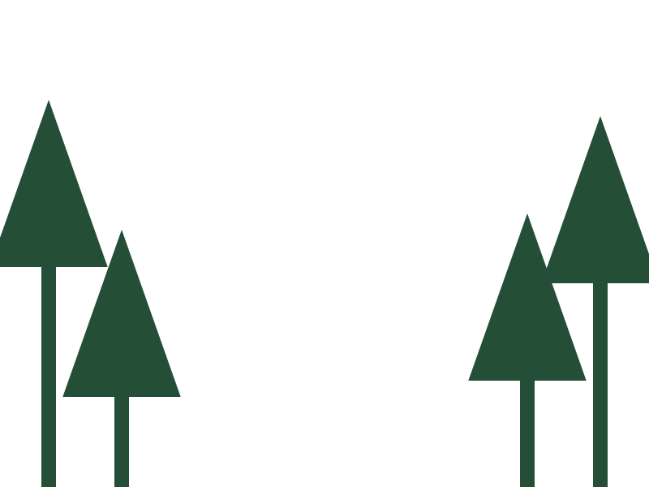

Scroll through layers
Pinned local GSAP/ScrollTrigger, bounded scroll mapping and matchMedia cleanup.
Scroll to move the near layer at a different pace. The scene remains readable without animation.


A change of pace.
Same scroll. Different depth.
GSAP ScrollTrigger maps the scene boundaries to a small vertical transform on the foreground layer.
Static scene available.